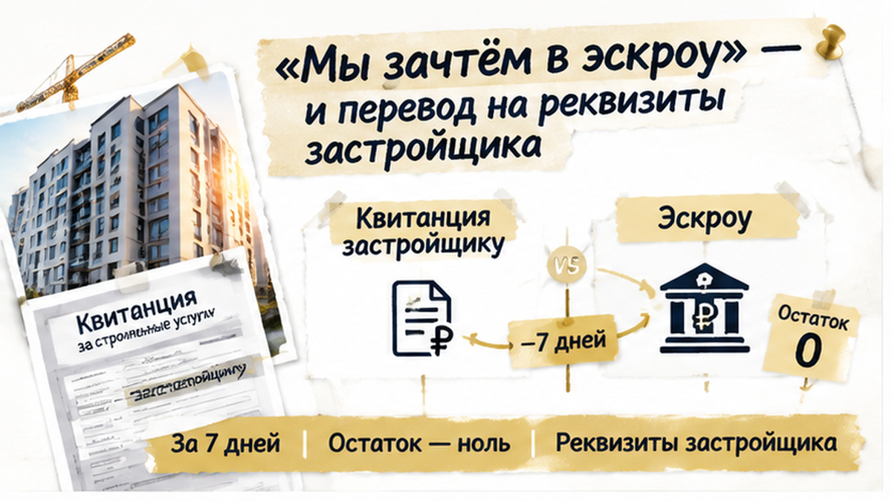
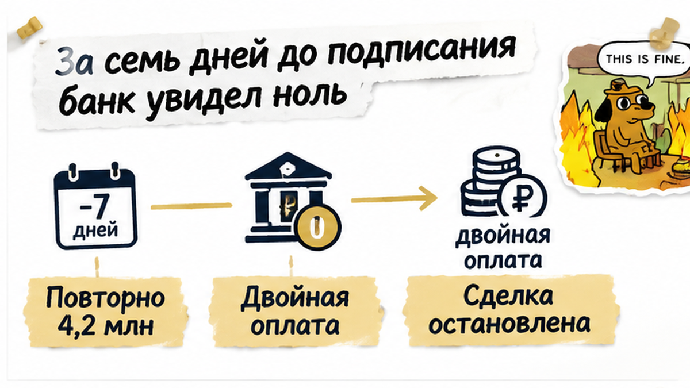
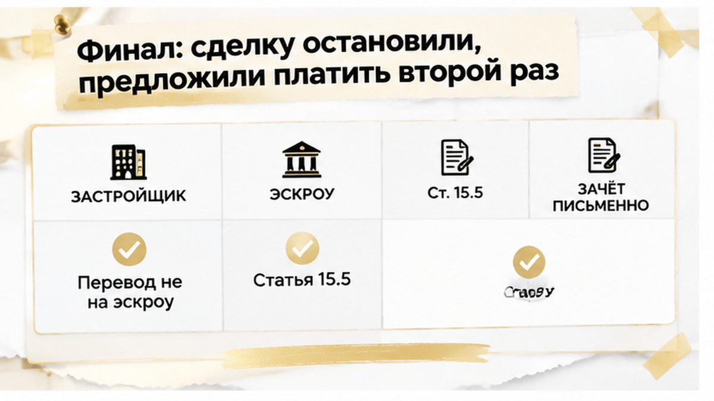
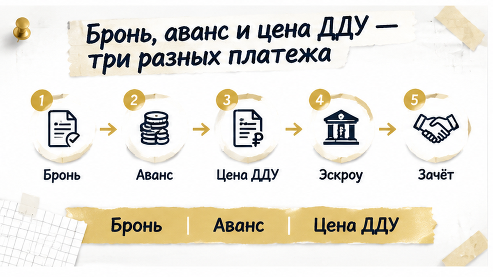

За семь дней до подписания ДДУ банк увидел на эскроу ноль — хотя в проекте договора стояли 4,2 млн рублей. Семья уже отправила крупный первоначальный взнос на реквизиты застройщика и услышала от менеджера: «Потом зачтём в эскроу». На финальной проверке выяснилось, что перевод застройщику и деньги на специальном банковском счёте — разные вещи. Сделку остановили, а семье предложили внести 4,2 млн повторно, уже на эскроу.
Я разбираю такие ситуации в Telegram The Риэлтор, Тюмень. Короткие разборы и рабочие материалы также выходят в MAX.
Семья выбрала квартиру в тюменской новостройке и получила предварительное одобрение ипотеки. Дальше всё выглядело привычно: менеджер назвал сумму первоначального взноса, предложил закрепить планировку и объяснил, куда перечислить деньги до подписания основного договора.
В проекте ДДУ цена квартиры и сумма, которую планировали разместить на эскроу, составляли 4,2 млн рублей. Эскроу — это специальный счёт в банке. Покупатель вносит туда деньги, банк блокирует их, а застройщик получает доступ только при условиях, предусмотренных законом.
Но первый перевод ушёл не на эскроу, а на обычные реквизиты застройщика. Его провели в рамках брони и первоначального взноса. Для семьи разница казалась технической: деньги уже отправлены, квартира закреплена, значит, оставалось спокойно дождаться ДДУ.
Через неделю банк сопоставил проект будущей сделки с тем, что действительно лежало на счёте. В договоре была указана сумма 4,2 млн, а фактический остаток на эскроу оказался нулевым.
Цифра в проекте ДДУ не подтверждает, что деньги уже находятся на специальном счёте. И перевод на обычный счёт застройщика не превращается в эскроу только потому, что менеджер пообещал зачесть его позже.
Для банка важен не общий смысл разговора, а конкретный маршрут денег: какой счёт, какой договор, какой документ и на каком этапе деньги должны поступить. Поэтому ипотечную сделку могли остановить до подписания, пока условия ДДУ и кредитных документов не будут выполнены.
Фраза «потом всё зачтётся в эскроу» звучит успокаивающе, но сама по себе денег туда не зачисляет. Если перевод ушёл на обычный расчётный счёт, банк продолжает видеть на эскроу ноль, пока средства не поступят туда по установленной процедуре.
Здесь важно не смешивать несколько разных вещей. До регистрации ДДУ действует свой порядок внесения средств на эскроу, а статья 15.5 закона № 214-ФЗ связывает внесение денег с регистрацией договора. Проще говоря, перевод на первый попавшийся счёт застройщика нельзя автоматически назвать исполнением обязанности по будущему ДДУ.
Первый платёж мог быть бронью, авансом в счёт будущего договора или оплатой услуги резервирования. От этого зависят и права покупателя, и условия возврата. Если деньги должны уменьшить цену будущего ДДУ, это необходимо зафиксировать письменно, а не оставлять в переписке на уровне «не переживайте, мы всё учтём».
В таком документе должны быть указаны сумма и дата перевода, основание получения денег, получатель, связь с конкретным будущим ДДУ и подтверждение, что покупателю не придётся вносить ту же сумму повторно. Если это именно бронь, отдельно фиксируют услугу, срок резервирования и возможное удержание при отказе или срыве сделки.

Платёжное поручение или чек доказывает, что перевод состоялся. Но не всегда объясняет, как его учтут дальше. Назначение «бронь» или «взнос» не равно оплате цены ДДУ через эскроу, а перевод на личную карту менеджера тем более не заменяет документ от застройщика и банковскую процедуру.
Поэтому предложение повторно внести 4,2 млн на эскроу стало для семьи не обычным техническим шагом, а риском двойной оплаты. Пока первый перевод не связан с ценой конкретного ДДУ письменным подтверждением, считать его частью будущего платежа небезопасно.

За семь дней до назначенной даты семья передала банку документы на финальную проверку. В проекте ДДУ была указана сумма 4,2 млн рублей для размещения на эскроу. Но первый платёж уже ушёл застройщику: покупатели рассчитывали, что его позже учтут в общей сумме.
Банк посмотрел не на обещание менеджера, а на сам счёт. Остаток на эскроу — ноль.
Для специалиста это не выглядело мелкой технической недостачей. Важны не только сумма и цена квартиры, но и маршрут денег: поступили ли они на эскроу, открытый для конкретного ДДУ. Перевод на обычные реквизиты застройщика такой маршрут не заменяет.
Менеджер писал, что первоначальный взнос «потом зачтётся». Но переписка не пополняет специальный счёт и не меняет назначение уже проведённого платежа. Для банка нужно было подтвердить, где находятся деньги и каким документом они связаны с будущим ДДУ.
До регистрации ДДУ порядок пополнения эскроу может быть не завершён. Поэтому проверять приходится всю связку: основание платежа, назначение, получателя, статус договора и момент, когда банк ожидает деньги на нужном счёте.
У семьи осталось платёжное поручение, но не было бумаги, которая однозначно связывала бы первый перевод с ценой конкретного ДДУ и исключала повторную оплату. Сам факт предварительного одобрения ипотеки тоже ничего не гарантировал: одобренный кредит не означает, что эскроу уже открыт и готов к пополнению.
Эти этапы лучше не смешивать. В одной из похожих ситуаций ипотеку одобрили, а счёт эскроу ещё не открыли. А при смене юридического лица застройщика отдельной проверкой становится судьба прежних документов и расчётов — об этом уже приходилось разбирать отдельно.

После сообщения банка застройщик предложил внести 4,2 млн рублей уже на эскроу. Так нулевой остаток исчез бы, но судьба первого платежа от этого не прояснялась.
Семье фактически предложили запустить деньги по второму маршруту, пока первый оставался без письменной привязки к цене ДДУ. Без подтверждения зачёта это создавало риск заплатить за одну квартиру дважды.
Покупатели отказались подписывать ДДУ и повторно переводить крупную сумму, пока не получили письменное объяснение по первому платежу и подтверждение со стороны банка. Подписание остановили.
Бронь и выбранная планировка оказались под угрозой, но это всё равно было безопаснее, чем отправлять ещё 4,2 млн рублей на доверии. Теперь нужно было отдельно разбирать условия бронирования: что именно оплатили, на какой срок закрепили квартиру и предусмотрен ли возврат при срыве сделки.
Бронь нельзя автоматически назвать оплатой квартиры. Она могла быть оформлена как услуга резервирования или как аванс в счёт будущего ДДУ. От этого зависело, что произойдёт с первым переводом и должен ли застройщик вернуть его либо зачесть в цену договора.
Если платёж действительно засчитывается в цену ДДУ, это должно быть написано: сумма, дата, основание зачёта и прямое подтверждение, что повторно вносить её не потребуется. Устное «решим на сделке» такого спокойствия не даёт.
В другой истории сделку остановили из-за изменения ипотечной ставки перед подписанием — здесь причиной стал уже не тот маршрут платежа. Но итоговая точка похожа: пока документы и деньги не сходятся, подпись превращается не в формальность, а в риск.
Если менеджер обещает сам положить деньги на эскроу, вы подписываете ДДУ — или сначала требуете выписку по счёту?
После такой паузы семья обычно слышит: «Но вы же уже внесли деньги». Бронь, аванс и цена ДДУ могут относиться к одной покупке, но это не один и тот же платёж.
Бронь нужна, чтобы застройщик временно придержал квартиру. Её могут оформить как оплату услуги или как аванс в счёт будущей цены. От этого зависят возврат денег и последствия отказа от сделки.
Аванс тоже не становится эскроу автоматически. Если его должны зачесть в цену будущего ДДУ, в документе нужно указать сумму, основание платежа, получателя и подтвердить, что покупателю не придётся платить её второй раз.
Цена ДДУ — сумма, прописанная в договоре участия в долевом строительстве. Её вносят на эскроу по порядку, указанному в ДДУ и согласованному с банком. Сам факт предыдущего платежа в пользу застройщика не подтверждает исполнение этой обязанности и не заменяет банковскую запись о поступлении средств.
Если бронь уже оплачена, запросите письменное подтверждение её зачёта: сумму, основание и порядок. Ответ «не переживайте, всё решим на сделке» таким подтверждением не является.

Перед датой сделки сведите в одну картину договор, платежи и требования банка. Важна не только сумма, но и маршрут денег.
| Что проверить | Где смотреть | Что должно совпасть |
|---|---|---|
| Цена и сумма на эскроу | ДДУ и кредитный договор | Сумма, сроки и порядок платежей |
| Банк-эскроу и реквизиты | ДДУ, документы банка, личный кабинет | Получатель — счёт эскроу, а не обычный счёт застройщика |
| Фактический остаток | Выписка или личный кабинет | Остаток подтверждён банком |
| Регистрация ДДУ и пополнение | Росреестр и банк | Порядок соответствует ДДУ и банковской инструкции |
| Первый платёж и его зачёт | Договор, платёжное поручение, письмо | Понятны получатель, сумма, назначение и отсутствие повторной оплаты |
Сохраните платёжное поручение и переписку с менеджером. Назначение «бронь» или «взнос» не равно оплате цены ДДУ через эскроу. Перевод на личную карту менеджера тем более не подтверждает, что деньги попали на нужный счёт.
Одобрение ипотеки также не означает, что эскроу уже открыт и готов к пополнению. Эти этапы нужно проверять отдельно: одобренный кредит не всегда означает открытый эскроу.
Если застройщик меняет юридическое лицо, отдельно проверьте судьбу договора и счёта: в новом ДДУ эскроу должен быть понятен.
Если вы выбираете новостройку в Тюмени, такие документы лучше сверить до даты подписания, а не в последний час. Разбираю связку «ДДУ — платёж — эскроу» в Telegram и MAX.
Практическая граница здесь простая: не подписывать ДДУ и не переводить крупную сумму повторно, пока нет банковской выписки и письменного подтверждения зачёта первого платежа.
Семья остановила подписание — и это не отказ от покупки. Это пауза, чтобы спокойно проверить документы, получить позицию банка и не допустить, чтобы один платёж превратился в два. Иногда несколько дней на сверку сохраняют и деньги, и саму возможность нормально продолжить сделку.
А вы бы в такой паузе ждали обещанного зачёта или сразу запросили у застройщика и банка письменное подтверждение — и что именно попросили бы показать первым?